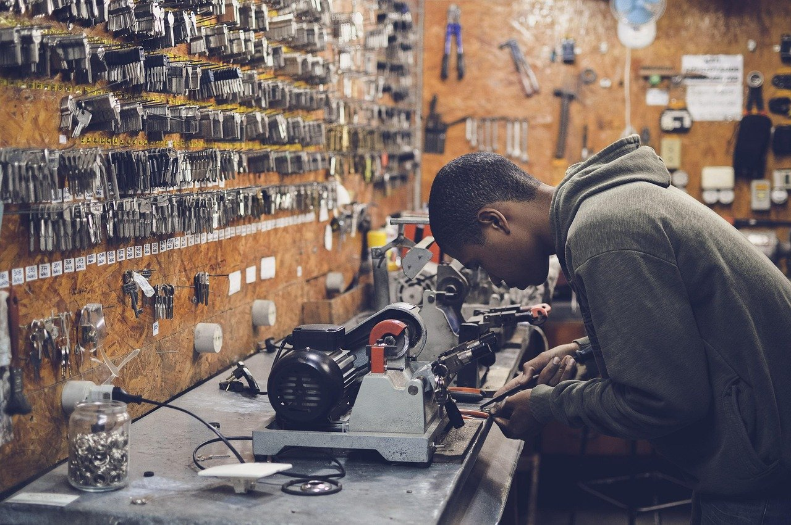

Atelier Chei Timișoara
Copii de chei în Timișoara.
Sună acum- Adresă
- Strada Doctor Ioan Mureșan 106, Timișoara
- Telefon
- 0767586433
Despre atelier
Atelier Chei Timișoara este pe strada Doctor Ioan Mureșan 106. Aici se fac copiile de chei.
Veniți cu cheia pe care o aveți, iar noi o copiem în atelier.

-
Lucru precis
Copii de chei făcute în atelier.
-
Contact direct
Sunați pentru întrebări înainte să veniți.
-
Acces facil
Atelier pe strada Doctor Ioan Mureșan.
Servicii
Atelierul face copii de chei. Pentru alte tipuri de chei, sunați și întrebați.
- Copii de chei
Adu cheia la atelier.
Strada Doctor Ioan Mureșan 106, Timișoara. Sunați dacă aveți o întrebare înainte să veniți.
Sună acumGalerie
Fotografii ilustrative. Apăsați pe o imagine ca s-o vedeți mai mare.
Contact
- Adresă
- Strada Doctor Ioan Mureșan 106, Timișoara
- Telefon
- 0767586433